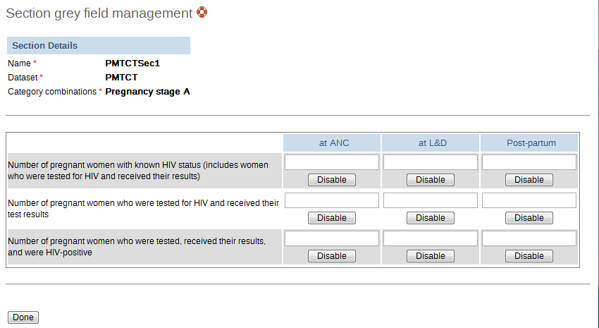
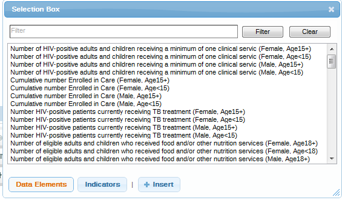

Once you have assigned a data set to an orgunit that data set will be made available in Data Entry for the orgunits you have assigned it to. A default data entry form will then be shown, which is simply a list of the data elements belonging to the data set together with a column for inputting the values. If your data set contains data elements with a non-default categorycombination, such as age groups or gender then additional columns will be automatically generated in the default form based on the different options/dimensions.
If you use more than one dataelement category combination you will get multiple columns in the data entry form with different column headings for the options. In addition to the default list-based data entry form there are two more alternatives, the section-based form and the custom form.
Section forms allow for a bit more flexibility when it comes to using tabular forms and are quick and simple to design. Often your data entry form will need multiple tables with subheadings, and sometimes you need to disable (grey out) a few fields in the table, both of these functions are supported in section forms. This function can be access by choosing Maintenance->Data set Section.
Section forms are separated automatically by data element category combinations, which produce a spreadsheet like data entry form for each section.
When designing a section form the procedure is as follows:
-
Set up your data set as described in the section called “Data sets”
-
Open the Data Set Section window (from right side menu under Data sets) and add your sections one by one. To add a new section to a section form, first choose the data set from the "Select data set" combo box. Then choose the specific category combo and press "Add new". You can now add data elements from the "Available data element" list on the left to the "Selected data elements" list on the right. Data elements can be sorted within the section with the use of the "Move up"
 and
"Move down"
and
"Move down"  buttons. Be sure to press
"Save" once you have finished.
buttons. Be sure to press
"Save" once you have finished.![[Note]](resources/images/admon/note.png)
Note You can only use one data element category combination per section.
-
You may need to control how the data element sections are displayed on the final form. In Data set Section management, select the data set from the "Data set" drop-down box, then leave [All] in the "Select Category Combo" drop-down. Click on "Sort section" to sort the order of appearance of your sections in the data entry form.
-
In Data Entry you can now start using the Section form (should appear automatically when sections are available for the selected data set). Data sets which have section forms will automatically display the section form.
-
Certain data elements may need to be disabled for data entry. Clicking on the "Section grey field management" menu item will allow you to disable specific data element category options as seen below. Pressing the "Disable" button will prevent data from being entered into this specific data element/category option during data entry. Be sure to press "Done" to save your changes.

A sample section form is displayed in the next figure. Notice how each data element category has been separated into a separate section, and a data entry table has been automatically generated by the system. Use of section forms in combination with data element categories can drastically reduce the amount of time which is required to create data entry forms for data sets.
 |
When the form you want to design is to complicated for the default or section forms then your last option is to use a custom form. This takes more time, but gives you full flexibility in term of the design. DHIS2 uses a built-in HTML editor (FcK Editor) for the form designer and you can either design the form in the UI or paste in your HTML directly (using the Source window in the editor). A complete reference for use of the editor can be found here.
One of the big advantages of custom forms, is that they can be created to mimic existing paper aggregation forms. This makes data entry much easier for users, and should reduce the number of data elements which are incorrectly entered, as they are more easily identifiable when entering data from a paper form.
Once a custom form has been added to a data set it will be available in data entry and used automatically.
| Note |
|---|---|
|
Custom forms are preferentially displayed over section forms. If a data set has both a section form and a custom form, the custom form will be displayed during data entry. Users will not be able to select which method they wish to input data, so be sure that your custom form contains all data elements which may be required. |
To add a custom form design to a data set then first locate your data set in the Data set Management window and click on the Design data entry form icon under Operations (the fifth icon), see the mouse-over text to be sure.
First provide a Name for the form. There are a few important buttons in the Editor that you must pay special attention to. The blue monitor icon is the full screen mode on/off button, which can be very useful. The there is a Source button that shows the HTML code for your form.
If you already have the HTML for your form then you should start by pasting it in here. Click on Source again to go back to preview/non-HTML mode. Then there is an icon in the top right corner with a + sign on it, this will open a list of available data elements to add to your form, the Data Element Selector window.
All the input fields need to have a link to a data element or indicator. To add new data elements to the form, double-click them from the data element/indicator box as shown below. You can also select a data element/indicator and press the "+Insert" button. You can switch between either data elements or indicators by pressing the respective buttons.
|  |
You can to intermediary saving by clicking on the Save button, and this will not close the window. It is recommended to save often to ensure you do not loose your work.
When you are done or want to test your form in data entry click on <Save and close>.
In custom data entry form you can use javascript to create dynamic behavior and customziations. The DHIS 2 data entry module provides a range of events which you can register for and use to perform actions at certain times. The events are registered on the document element. The jQuery event object and the data set identifier are always the first two arguments provided to the callback functions. The table below provides an overview of the events and when they are triggered.
Table 16.1. Data entry events
| Key | Description | Arguments |
|---|---|---|
| dhis2.de.event.formLoaded | Triggered after the data entry form is rendered, but before data values are set in entry fields. | Event | Data set ID |
| dhis2.de.event.dataValuesLoaded | Triggered after data values are set in entry fields. | Event | Data set ID |
| dhis2.de.event.formReady | Triggered when the data entry form is completely rendered and loaded with all elements. | Event | Data set ID |
| dhis2.de.event.dataValueSaved | Triggered when a data value is saved successfully. | Event | Data set ID | Data value object |
| dhis2.de.event.completed | Triggered when a data set is successfully marked as complete. | Event | Data set ID | Complete registration object |
| dhis2.de.event.uncompleted | Triggered when a data set is successfully marked as incomplete. | Event | Data set ID |
| dhis2.de.event.validationSuccess | Triggered when validation is done and there were no violations. | Event | Data set ID |
| dhis2.de.event.validationError | Triggered when validation is done and there were one or more violations. | Event | Data set ID |
| dhis2.ou.event.orgUnitSelected | Triggered when one or more organisation units are selected in the org unit web tree. | Event | Org unit IDs | Org unit names | Sub org unit IDs |
To register for such an event:
<script type="text/javascript">
dhis2.util.on( 'dhis2.de.event.formReady', function( event, ds ) {
console.log( 'The form with id: ' + ds + ' is loaded!' );
} );
dhis2.util.on( 'dhis2.de.event.dataValueSaved', function( event, ds, dv ) {
console.log( 'Data value: ' + dv.value + ' was saved with data element: ' + dv.de );
} );
dhis2.util.on( 'dhis2.de.event.completed', function( event, ds, cr ) {
console.log( 'Form was completed for org unit: ' + cr.ou );
} );
</script>
Be careful to only use "namespaced" events like the ones in the example above and not general ones like "click" as the dhis2.util.on method will unregister the event first.
If your function only applies to certain data sets you can use the supplied data set identifier and shortcut your function for unwanted data sets like this:
dhis2.de.on( 'dhis2.de.event.validationSuccess', function( event, ds ) {
if ( $.inArray( ds, ['utXOiGbEj14', 'Re7qzHEThSC'] ) == -1 ) {
return false;
}
console.log( 'Form with id: ' + ds + ' validated successfully!' );
} );
The identifiers of the input fields in the data entry form is on the format described below. This format can be used to select the input fields in your script and perform actions on them:
<dataelementid>-<optioncomboid>-val
Since the data set identifier is provided for all events a feasible alternative is to utilize the "files" Web API resource and keep your callback functions in a single file, where you let the javascript code take action based on which data set is currently loaded.
The data set assignment editor is a tool for adding and removing many data sets to organisation units in batch style. Start by selecting an organisation unit from the selection tree. In the area below the tree a grid will be displayed showing all data sets as columns and the child organisation units as rows.
From the grid you can now assign or unassign data sets simply by clicking on of the corresponding icons in the grid. If you want to assign or unassign an organisation unit to all data sets you can check or uncheck the checkbox next to the organisation unit. Your changes will automatically be saved.